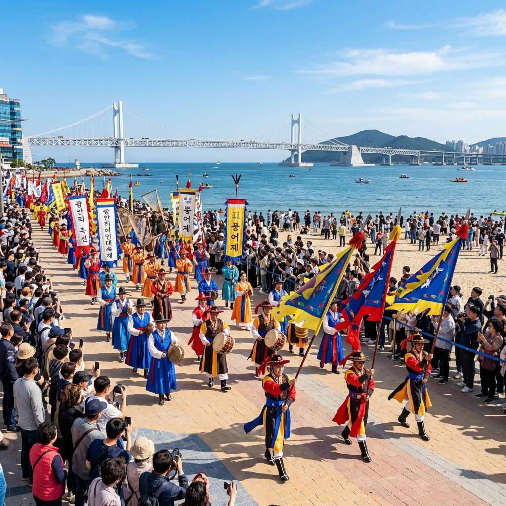
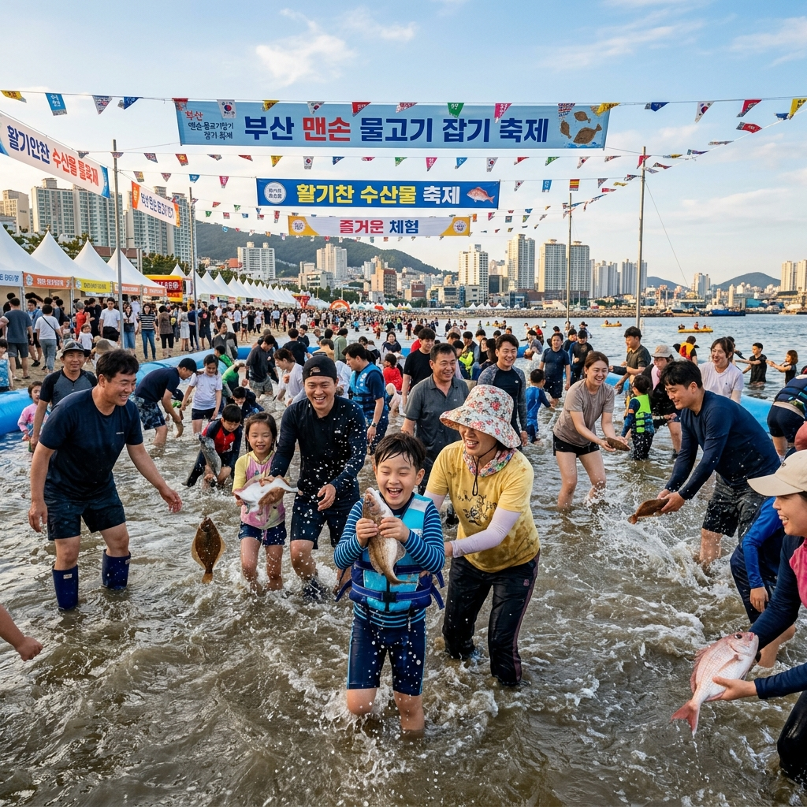
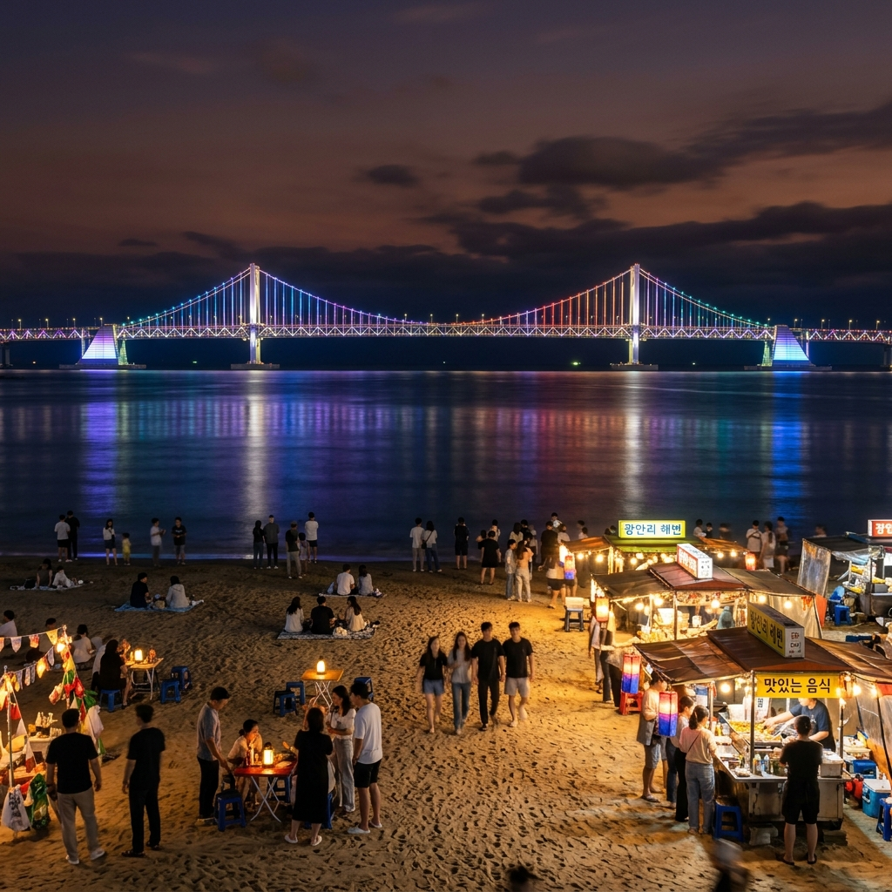

광안리라는 이름을 들으면 야경, 카페, 광안대교. 이것만 떠올리는 분이 많습니다. 그런데 매년 5월이면 이 광안리가 완전히 다른 공간으로 변신합니다. 400년 역사의 어업 공동체 '어방' 문화가 되살아나는 광안리 어방축제 기간에는 조선시대 경상 좌수사가 행진하고, 맨손으로 활어를 잡으며, 뮤지컬 공연이 광안대교 불빛 아래서 펼쳐집니다.
이 글은 2026년 어방축제를 3일간 완전히 소화하기 위한 정밀 분석 가이드입니다. 체험 접수 노하우부터 사진 명당까지, 축제를 100% 활용하는 방법을 담았습니다.
| 항목 | 내용 |
|---|---|
| 행사명 | 2026 광안리 어방축제 |
| 개최 시기 | 2026년 5월 중순 3일간 (수영구청 공지 확인 요망) |
| 장소 | 부산 수영사적공원 및 광안리해수욕장 일원 |
| 입장료 | 무료 (체험 일부 유료) |
| 지하철 | 3호선 수영역 1번 출구 도보 10분 |
어방이라는 단어는 현대인에게 낯설지만, 조선시대 경상 좌수영 지역에서는 일상적인 개념이었습니다. 경상 좌수영은 현재의 부산 수영구 수영동 일대로, 조선 수군의 동남해 총본부가 자리한 군사·행정의 핵심 거점이었습니다.
이 지역 어민들은 개인이 아닌 마을 공동체 단위로 조업했습니다. 수십 명이 함께 대형 그물을 설치하고, 구호에 맞춰 당기며, 수확물을 규칙에 따라 분배하는 시스템이 바로 어방입니다. 혼자서는 불가능한 규모의 어로를 가능하게 한 이 공동체적 방식은 단순한 어업 기술을 넘어, 마을 공동체의 연대와 생존 철학을 담고 있습니다.
어방 문화는 2011년 부산광역시 무형문화재로 지정되었으며, 이를 계승한 '좌수영어방놀이'는 국가무형문화재 제62호입니다. 오늘날 어방축제는 이 살아있는 문화유산을 현대인들이 직접 체험하는 장으로 기능하고 있습니다.

어방축제 3일간 프로그램 중 가장 압도적인 스케일을 자랑하는 것이 경상좌수사 행렬 퍼레이드입니다. 조선 경상 좌수사의 공식 행렬을 재현한 이 퍼레이드는 수십 명의 참가자가 전통 복식으로 무장하고 수영사적공원에서 광안리 해변 산책로까지 행진합니다.
행렬의 구성은 다음과 같습니다. 선두에는 취타대가 나팔과 북을 울리며 행진하고, 이어 의장기 기수단, 갑옷 병졸 행렬, 사또 가마 행렬이 뒤따릅니다. 취타대의 웅장한 음악이 광안리 해변 공기를 가득 채우는 순간, 현대적 스카이라인과 수백 년 전 행렬의 조화는 말로 표현하기 어려운 인상을 남깁니다.
관람 명당은 광안리해수욕장 산책로 중간 지점입니다. 행렬이 해변 산책로를 통과할 때 바다와 광안대교를 배경으로 하는 구도에서 사진을 찍을 수 있습니다. 행렬 출발 30분 전에 이 구간에 자리를 잡아야 방해 없는 관람과 촬영이 가능합니다. 스마트폰 1배 줌으로 가로 전체를 담거나, 2~3배 줌으로 복식 클로즈업을 시도해 보세요.
어방축제 체험 프로그램 중 인기 1위는 단연 맨손으로 활어잡기입니다. 임시로 조성된 대형 수조에서 살아있는 물고기를 맨손으로 잡는 이 체험은, 아이들에게는 최고의 생태 교육이고 어른들에게는 동심 회복의 시간입니다.
미끄럽고 빠른 물고기를 잡으려면 요령이 있습니다. 물 위에서 쫓는 것보다 수조 바닥에서 몰아붙이는 전략이 효과적입니다. 양손을 넓게 벌려 물고기가 도망갈 공간을 좁힌 뒤, 재빠르게 아래에서 떠올리듯 잡는 것이 핵심 기술입니다.
체험 신청은 당일 오전 현장 접수로 운영됩니다. 오전 10시 개장과 동시에 수영사적공원 종합 안내 부스에서 당일 프로그램 일정표를 받고 맨손 활어잡기 접수 대기를 우선 확인하세요. 점심 이후에는 인기 체험의 경우 당일 접수가 마감되는 경우가 많습니다.

수십 명이 함께 긴 줄에 달린 대형 그물을 구호에 맞춰 당기는 어방그물끌기 한마당은 어방 문화의 핵심인 공동체적 협동을 몸소 체험하는 프로그램입니다.
줄을 잡고 서면 양옆에 처음 만나는 사람들이 섭니다. 리더의 구호에 맞춰 줄을 당기는 단순한 행위 속에서도, 서로의 박자를 맞추고 힘을 합치는 과정에서 공동체 연대감이 자연스럽게 생깁니다. 끝나고 나서 함께 박수를 치며 웃게 되는 것은 이 체험의 숨겨진 매력입니다.
그물끌기 체험은 참가 인원이 어느 정도 모이면 수시로 진행됩니다. 별도 접수 없이 현장에서 참가할 수 있으나, 어린 아이들의 경우 보호자와 함께 참여하는 것이 안전합니다.
축제 매일 저녁 8시경, 수영사적공원 메인 무대에서 뮤지컬 어방 공연이 펼쳐집니다. 어방 문화의 역사를 현대적 뮤지컬 형식으로 재해석한 이 공연은, 배우들의 전통 의상 색채와 음악이 광안대교 야간 조명과 어우러지면서 독특한 분위기를 만들어냅니다.
공연장 앞에 설치된 좌석은 선착순으로 채워집니다. 공연 시작 30분 전부터 자리를 잡는 것이 좋으며, 좌석이 차면 서서 관람하는 방식으로 변합니다. 야외 공연이라 돗자리와 방석을 가져오는 사람들도 많습니다.
축제장인 수영사적공원 자체가 조선시대 경상 좌수영의 본부 터였다는 사실을 아는 방문객은 생각보다 많지 않습니다. 공원 안에는 여러 역사 유적이 보존되어 있습니다.
| 유적명 | 내용 |
|---|---|
| 25의용단 | 임진왜란 의병 25인 기리는 제단 — 매년 축제 중 제례 거행 |
| 수영 고목 팽나무 | 수령 500년 이상. 수영 역사의 산증인 |
| 수영성 남문지 | 조선 경상좌수영 성곽 남문 기단 흔적 |
| 수영민속예술관 | 좌수영어방놀이, 수영야류 관련 자료 상설 전시 |
축제가 끝난 뒤 광안리 해변에서의 저녁은 하루를 완성하는 마지막 장면입니다. 해수욕장 해변 모래사장에 앉아 광안대교가 야간 조명으로 물드는 장면을 바라보는 것만으로도 충분합니다. 입장료가 없는 이 절경이 부산에 있다는 사실이 새삼 감사하게 느껴집니다.
제철 해산물: 5월은 도다리(참가자미) 제철입니다. 광안리 인근 어시장과 횟집에서 갓 잡아 올린 도다리 쑥국과 활어회 세트는 이 계절의 최고 미식입니다. 합리적인 가격대의 회센터가 해수욕장 주변에 다수 있습니다.
야시장 먹거리: 축제 기간 중 해변 산책로에는 해산물 꼬치, 어묵 바, 부산 오뎅 등 각종 먹거리 부스가 늘어섭니다. 부산 어묵은 공장 제품과 달리 통통하게 씹히는 수제 어묵 맛이 나며, 어방축제 기간 현지 생산 어묵을 파는 부스는 특히 인기입니다.

| 출발지 | 경로 |
|---|---|
| 서울 (KTX) | 서울역 → 부산역 2시간 30분 → 1호선 서면역 환승 → 3호선 수영역 |
| 부산 시내 | 지하철 3호선 수영역 1번 출구 → 도보 10분 |
| 해운대에서 | 2호선 해운대역 → 수영역 환승 → 도보 |
| 자동차 | 광안리 해수욕장 주변 공영 주차장 이용. 축제 기간 주말 주차 매우 혼잡 |
5월 어방축제 기간 광안리 주변 도로는 심각하게 혼잡합니다. 자동차 이용 시 이미 광안리 진입 자체가 막히는 경우가 많습니다. 수영역에서 걸어오는 것이 훨씬 빠르고 스트레스도 없습니다. 부산 시티투어 버스를 이용하는 방법도 있습니다.
#광안리어방축제2026 #부산5월축제 #어방축제 #맨손활어잡기 #경상좌수사행렬 #광안리해변 #수영사적공원 #부산전통문화 #광안대교야경 #부산여행추천